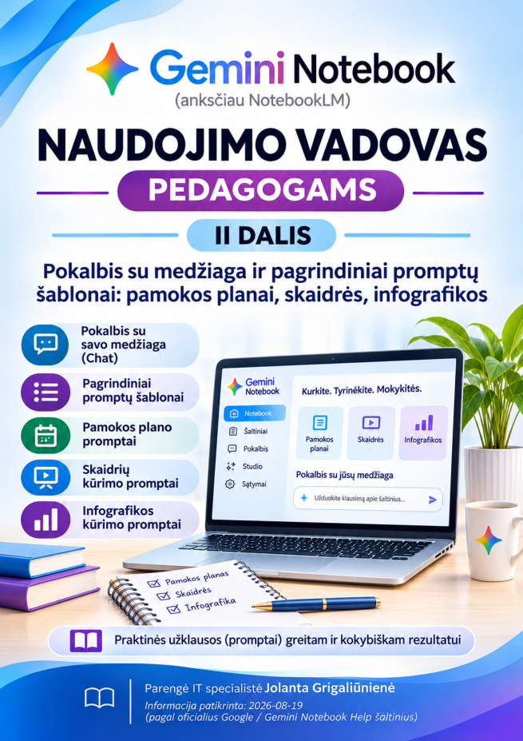
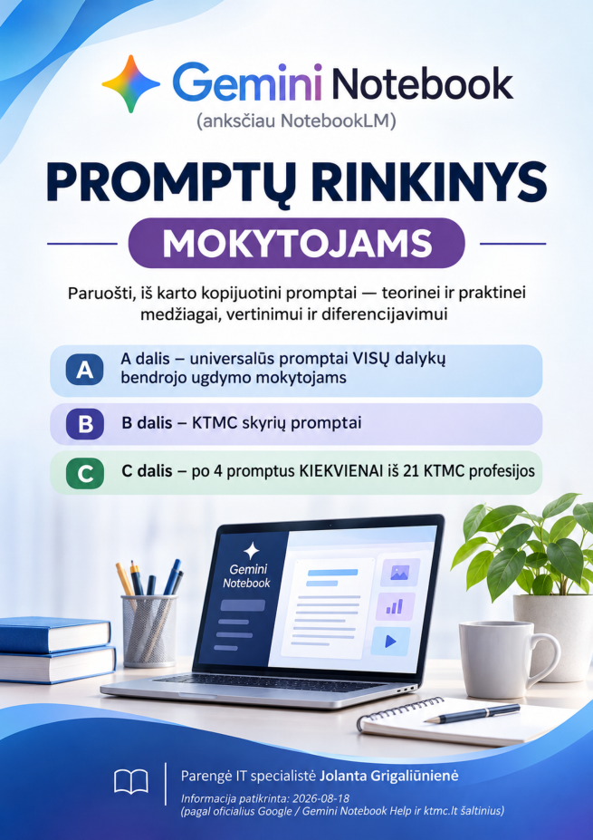

Leidinys 01 / 04
Gemini Notebook
Naudojimo vadovas pedagogams · I dalis
Pradžia, sąsaja, prisijungimas ir šaltiniai
Praktiniai leidiniai mokytojams apie dirbtinio intelekto taikymą ruošiantis pamokoms, kuriant mokomąją medžiagą ir vertinant mokinių pasiekimus.
Pasirinkite leidinį. „Skaityti“ atidaro PDF naršyklėje, „Atsisiųsti“ išsaugo jį įrenginyje.
Naudojimo vadovas pedagogams · I dalis
Pradžia, sąsaja, prisijungimas ir šaltiniai

Naudojimo vadovas pedagogams · II dalis
Pokalbis su šaltiniais, pamokų planai, skaidrės ir infografikos

Promptų rinkinys mokytojams
Praktiškai pritaikomi užklausų šablonai mokymui ir pasirengimui pamokoms
Mokytojo vertinimo darbe vadovas
Testai, rubrikos, grįžtamasis ryšys ir atsakingas DI taikymas